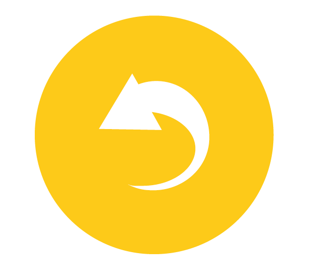
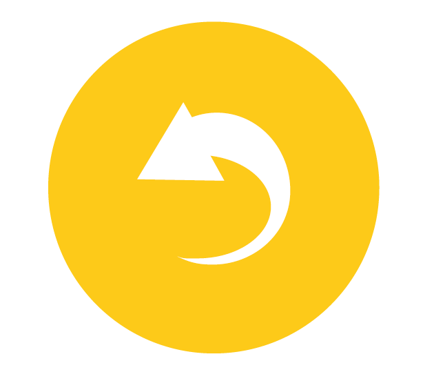

Cittadini a basso consumo
E gli oggetti dialogano tra loro, con la città e con cittadini in una rete “Internet delle Cose” (Internet of Things) che vedrà nel 2020 cinquanta miliardi di dispositivi connessi! Queste innovazioni si stanno diffondendo e nei prossimi decenni saranno una realtà comune.
Ma tu puoi da subito cambiare le tue abitudini e adottare comportamenti virtuosi. Qualche consiglio?
- Le lampadine ad incandescenza sono fuori legge... se ne sopravvive qualcuna, sostituiscila con una lampadina a basso consumo, possibilmente a LED
- Non lasciare in stand-by televisori, computer o stampanti
- Non riporre cibi caldi nel frigorifero (e sbrinalo spesso!)
- Scegli bene la classe energetica dei tuoi elettrodomestici: più alta è la classe più basso è il consumo
- Avvia lavatrice e lavastoviglie solo se a pieno carico
- Se fa caldo, non aprire porte e finestre: abbassa la temperatura dei termosifoni!
- Cambia i vecchi infissi per isolare termicamente la tua casa
- Imposta la temperatura dell'impianto di condizionamento in modo da evitare sbalzi termici tra interno ed esterno.
C'è tanto da fare per diventare sostenibili ed è essenziale il contributo di ogni cittadino.
Speriamo che questo piccolo viaggio nel mondo della sostenibilità ti sia servito ad imparare cose nuove e a diventare più consapevole e più ecologico.
C'è tanto da fare per proteggere il nostro ambiente e anche tu puoi dare il tuo contributo di ogni cittadino. Speriamo che questo piccolo viaggio nel mondo della sostenibilità ti sia servito ad imparare cose nuove e a diventare più consapevole e più ecologico.


 
